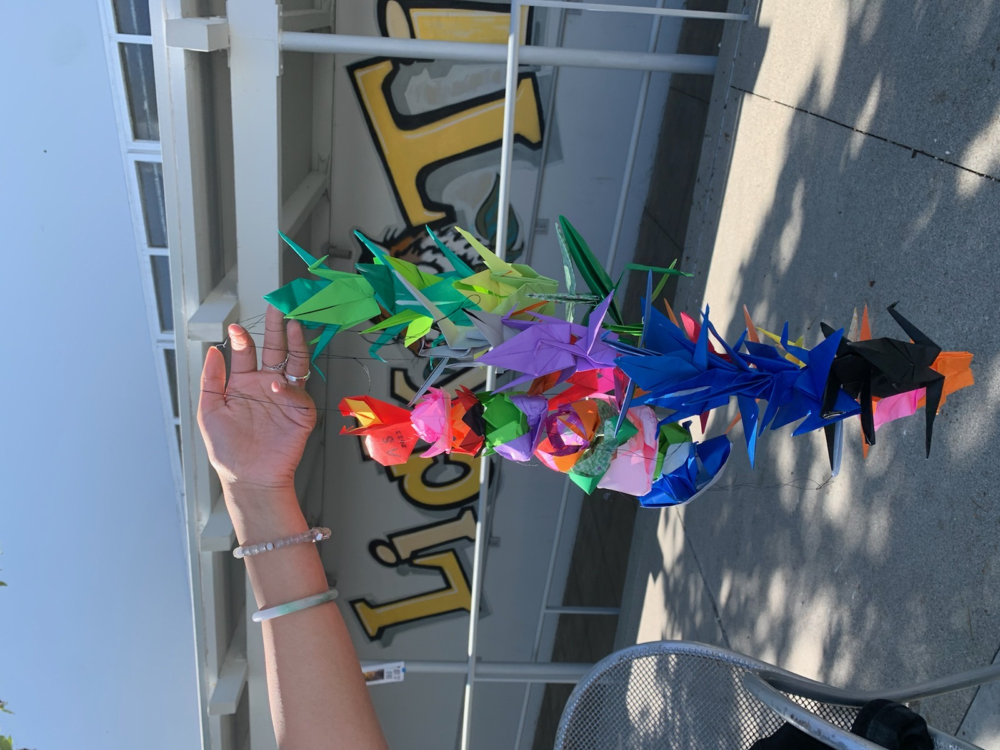
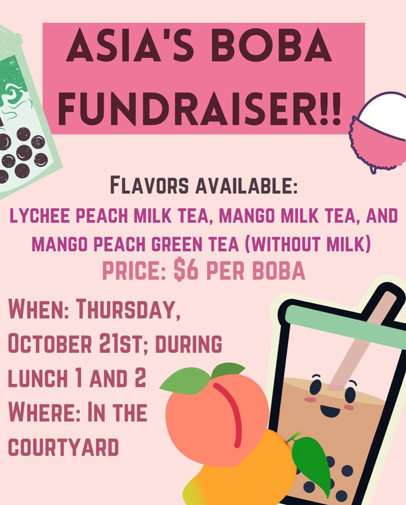
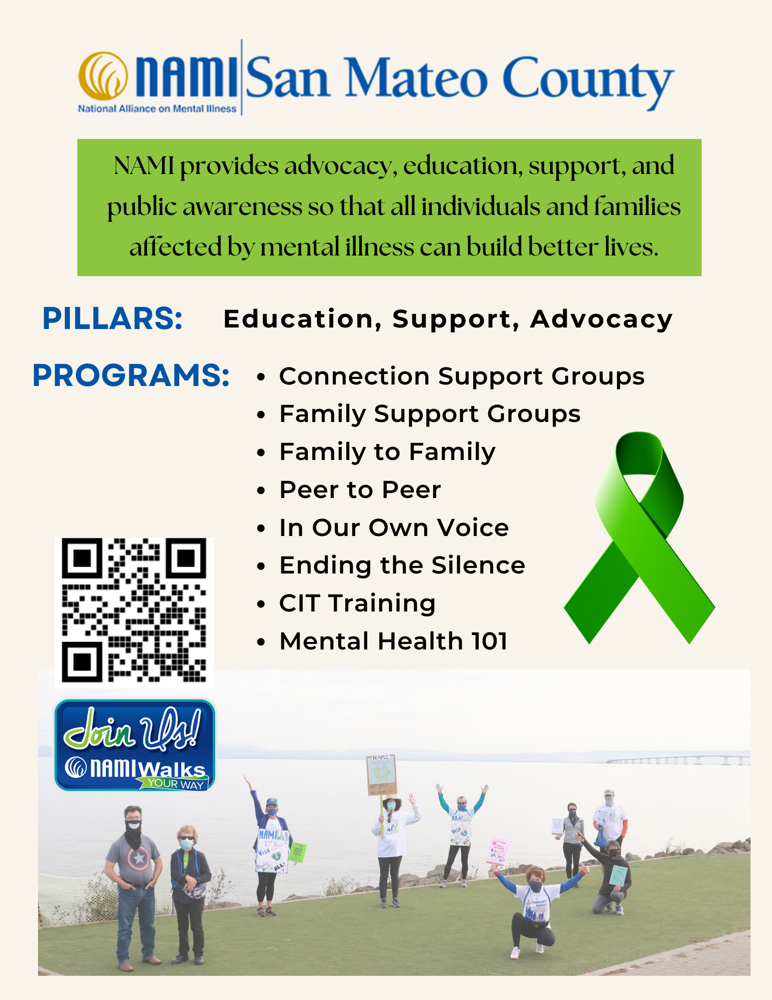
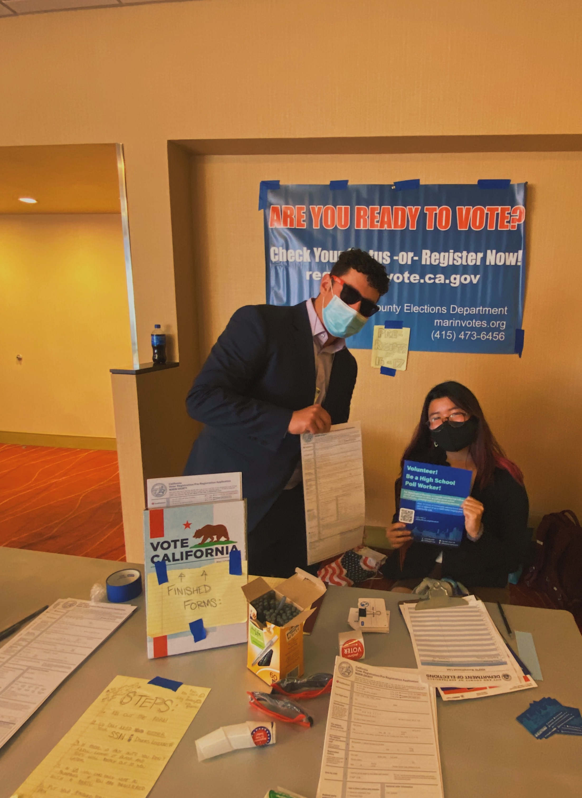
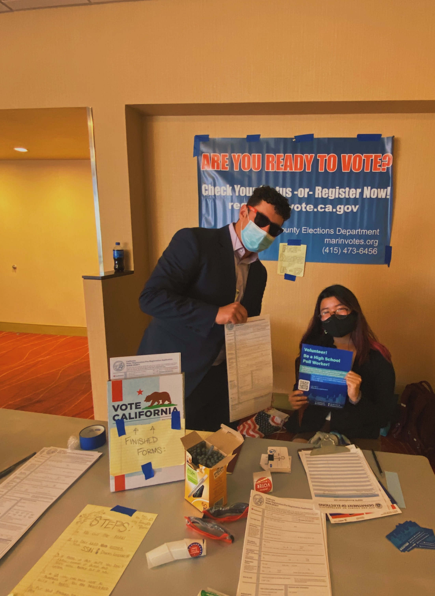

AAPI Students in Alliance (ASIA) club!
Being a part of my school's AAPI affinity space has been one of my most fulfilling and foundational experiences.
Our meetings range from discussing current issues (eg. cultural appropriation, the model minority myth) to celebrating traditional holidays together! We also host boba fundraisers for the school and volunteer in the larger SF community when we can.
Through ASIA, I've been able to learn and participate in diversity, equity and inclusion (DEI) through conventions like Stanford's Listen to the Silence and even the Student Diversity Leadership Conference hosted by the National Association of Independent Schools.
 mental health
Mental health is an incredibly important and meaningful topic to me, and I've dedicated a lot of my junior and senior year into mental health advocacy.
In the summer of 2022, I volunteered for NAMI San Mateo County as a member of the NAMIWalk Committee.
Focusing on outreach, I created several graphics for the community. Take a look at some of my designs!
debate/civic education
When I first joined debate, I was a timid and anxious middle schooler trying to understand my new home. However, as I leaned into challenges with my peers, I slowly found my voice and realized my power.
As difficult and frustrating as it can feel to navigate the world of politics, I've found fulfillment in my work and activism. I've been an active part of Junior State of America for the past few years, and am now a part of regional leadership and co-president of my school's chapter.
After poll working for numerous city elections, I became an elections ambassador, recruiting friends and peers to preregister to vote!
 
